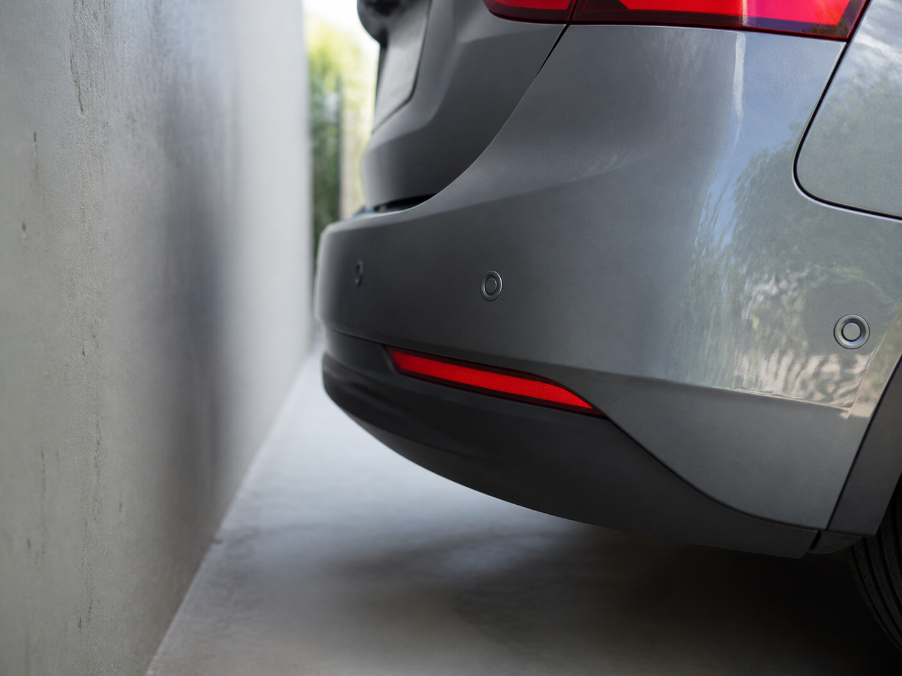
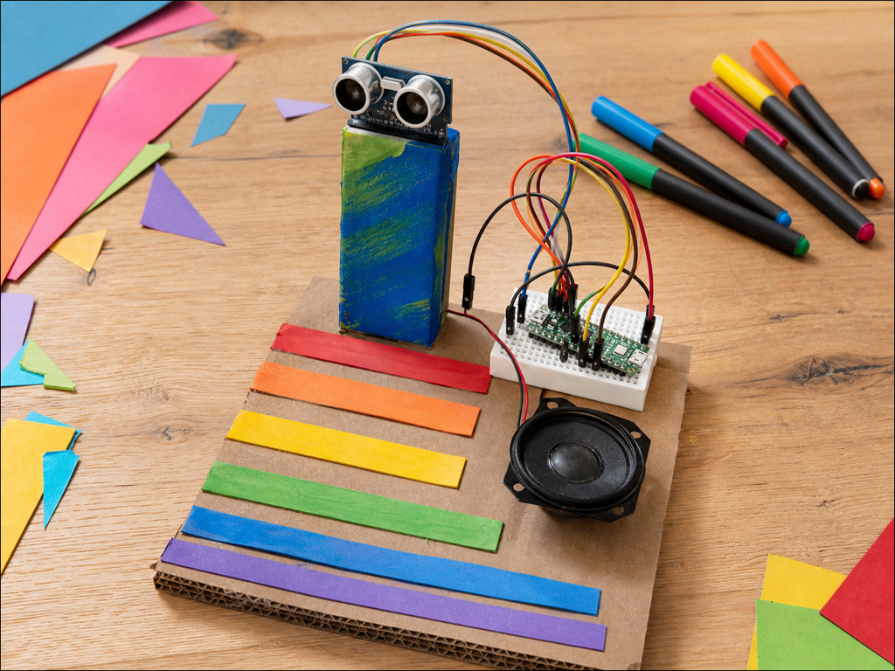

Parking sensor
DetectGap to the wall
DecideCloser than 30 cm
DoBeep faster
A distance sensor measures how far away something is without touching it.
It works like a bat. One side sends out a click too high for you to hear, the other side listens for the echo, and the time it takes gives the distance.
Your projects can use it to react as something comes closer, or to measure a gap that keeps changing.


from gpiozero import DistanceSensor
sensor = DistanceSensor(
echo=18, trigger=17
)
distance = sensor.distancefrom picozero import DistanceSensor
sensor = DistanceSensor(
echo=15, trigger=13
)
distance = sensor.distancedistance is in metres and stops at 1. Pass max_distance=2 to see further, or read sensor.value for 0 to 1. Power it from 3V3, not 5V.